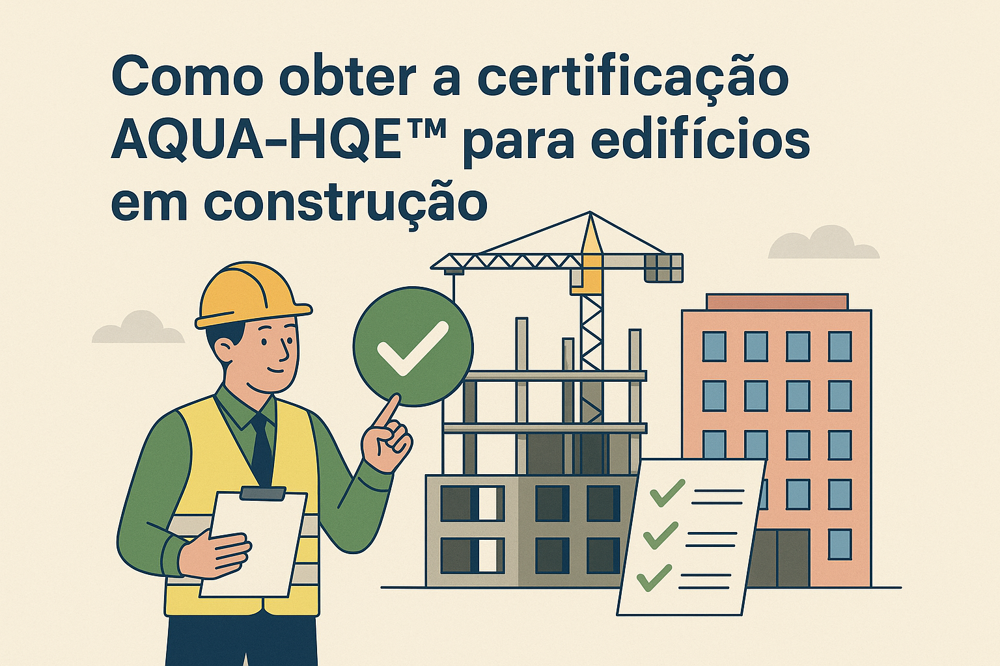

.png)
Como obter a certificação AQUA-HQE™ para edifícios em construção
Publicado em 03/07/2025
| Por Vanzolini
Entenda como obter a certificação AQUA-HQE™ e transforme o padrão de sustentabilidade nas construções.

1. O que é a Certificação AQUA-HQE™?
Uma certificação internacional que transforma a forma como construções são projetadas, executadas
e valorizadas.
- Baseada no modelo francês HQE™, adaptada ao Brasil pela Fundação
Vanzolini.
- Foco em práticas construtivas sustentáveis, uso racional de recursos e qualidade do ambiente
construído.
- Atende empreendimentos residenciais, comerciais e de infraestrutura nos ciclos de construção e
operação.
2. Por que buscar a certificação AQUA-HQE™?
Mais do que um diferencial competitivo, é um investimento no futuro do planeta e no valor da sua
edificação.
- Reduz impactos ambientais e promove a eficiência energética.
- Melhora a qualidade de vida dos ocupantes e fortalece a imagem da empresa.
- Atende exigências de mercado e contribui para os compromissos ESG.
- Saiba mais no artigo oficial da Vanzolini:
Como obter a certificação AQUA-HQE™
.
3. Etapas da Certificação no Ciclo Construção
Processo dividido em três fases com auditorias e emissão de certificados:
- Pré-projeto: definição de metas ambientais, análise do local e finalização dos projetos
básicos.
- Projeto: desenvolvimento dos projetos executivos e aprofundamento de estudos
termoenergéticos e acústicos.
- Execução: verificação da conformidade entre projeto e obra construída, antes da entrega
final.
- Cada fase conta com uma auditoria e emissão de dois certificados: um nacional (AQUA) e outro
internacional (HQE).
- Conheça os detalhes do ciclo construção no site da Vanzolini:
Sustentabilidade e Certificação AQUA-HQE™
.
4. O Dossiê AQUA-HQE™
Documento fundamental que justifica o atendimento aos requisitos técnicos da
certificação.
- Elaborado em todas as fases pelo empreendedor.
- Inclui autoavaliação ambiental e do sistema de gestão, com evidências como memoriais, projetos e
estudos.
- É a principal referência para os auditores durante a certificação.
5. As 14 Categorias de Desempenho Ambiental (QAE)
O empreendedor deve hierarquizar essas categorias conforme as metas da edificação:
- Qualidade sanitária do ar, da água e do ambiente.
- Eficiência energética, gestão de resíduos, conforto acústico, visual e térmico.
- Integração ao entorno, gestão de recursos e mais.
6. Benefícios da Certificação AQUA-HQE™
Vantagens que se estendem ao meio ambiente, usuários e mercado:
- Eficiência ambiental: menor consumo de energia, água e materiais.
- Ambientes mais saudáveis, com qualidade do ar e conforto térmico.
- Reconhecimento no mercado: posicionamento como referência em construção sustentável.
- Valorização imobiliária e adequação às diretrizes ESG.
- Leia mais em:
Certificação AQUA-HQE™ para negócios imobiliários
.
7. Superando os Desafios da Certificação
A jornada exige esforço, mas os resultados são duradouros.
- Investimentos iniciais em tecnologias e capacitação podem ser um obstáculo, mas se pagam com os
ganhos posteriores.
- Com apoio técnico especializado e planejamento, os processos são otimizados e os resultados
maximizados.
8. Baixe o E-book Exclusivo
Quer se aprofundar mais? Baixe gratuitamente o e-book da Vanzolini:
A Certificação AQUA-HQE™ e suas contribuições à consolidação do perfil ESG de uma empresa
9. A MAHALO pode ajudar!
Estamos ao lado da sua empresa em todas as etapas do processo de certificação.
- Assessoria completa na elaboração de dossiês e condução das etapas.
- Treinamentos sobre os referenciais técnicos e práticas sustentáveis.
- Suporte técnico para avaliação de desempenho ambiental e conformidade com os critérios.
Obter a certificação AQUA-HQE™ é ir além da construção – é construir um futuro sustentável.
Fale com a MAHALO Consultoria e comece sua jornada rumo à excelência ambiental.